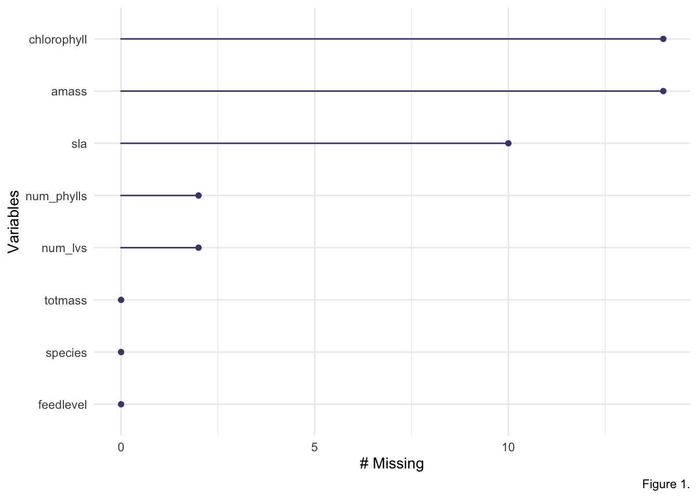
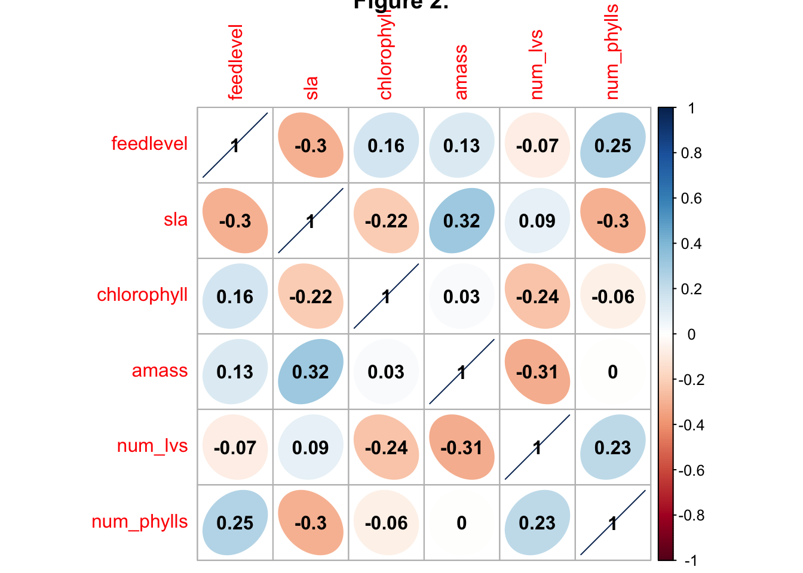
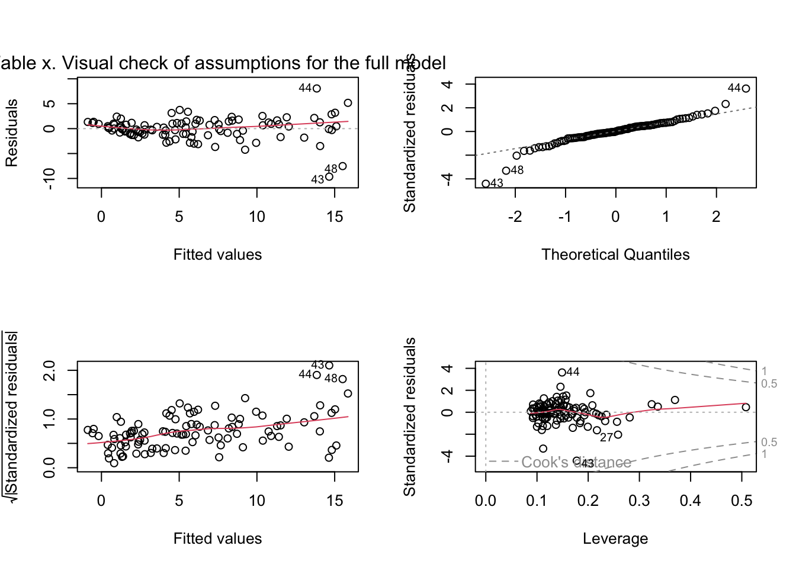
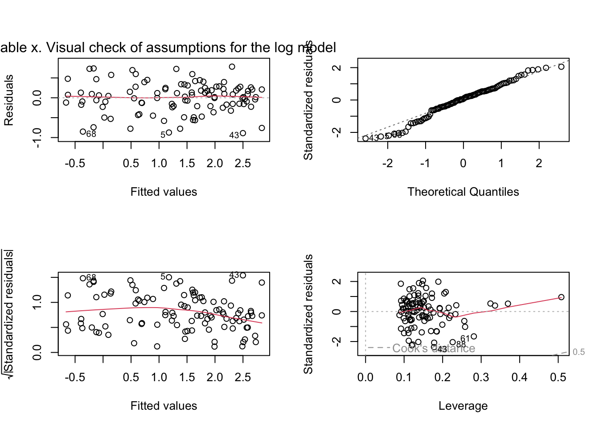
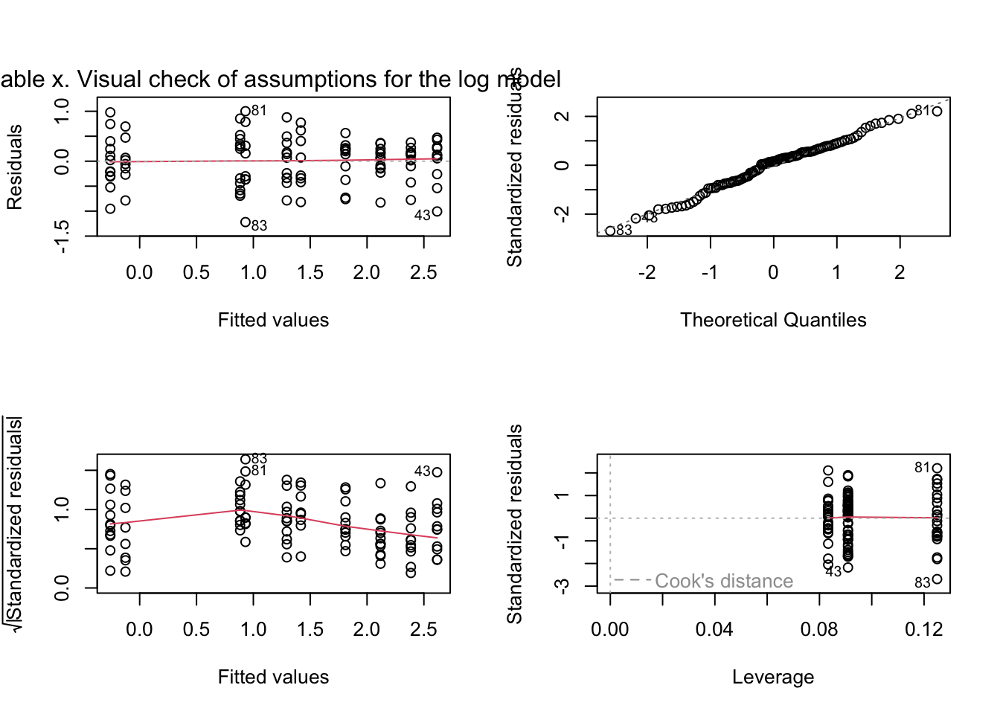
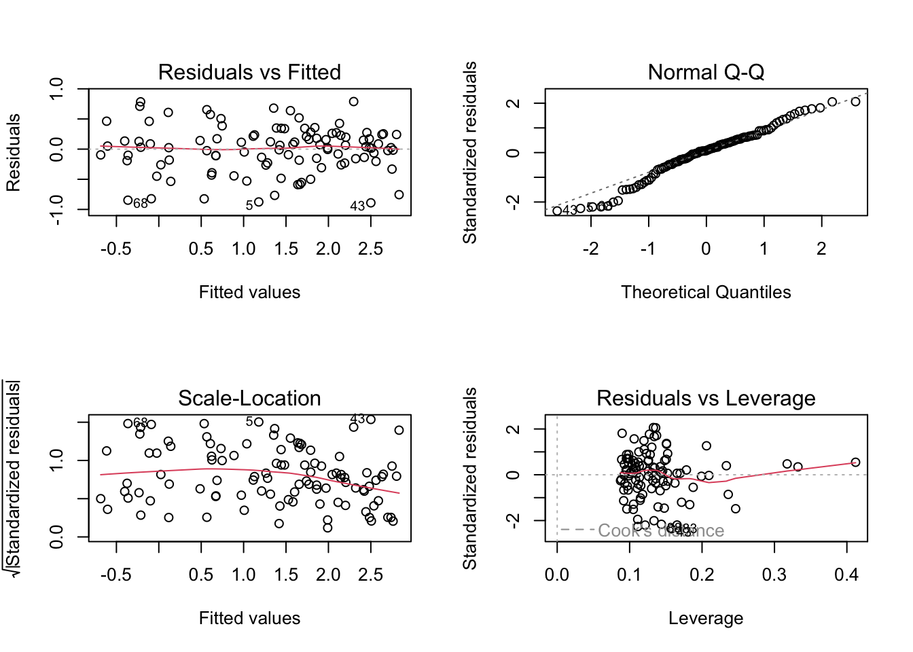
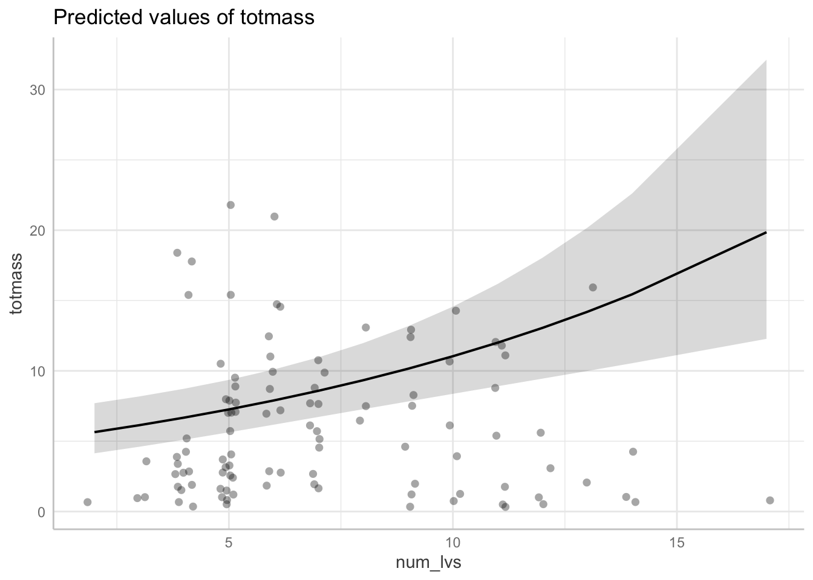

Code
# loading in necessary packages
library(tidyverse)
library(here)
library(janitor)
library(ggeffects)
library(performance)
library(naniar)
library(flextable)
library(car)
library(broom)
library(corrplot)
library(AICcmodavg)
library(GGally)# loading in necessary packages
library(tidyverse)
library(here)
library(janitor)
library(ggeffects)
library(performance)
library(naniar)
library(flextable)
library(car)
library(broom)
library(corrplot)
library(AICcmodavg)
library(GGally)# reading in the data, filtering for clarity and relevancy
plant <- read_csv(here("data", "knb-lter-hfr.109.18","hf109-01-sarracenia.csv")) %>%
# make column names cleaner
clean_names() %>%
# select columns of interest
select(totmass, species, feedlevel, sla, chlorophyll, amass, num_lvs, num_phylls)llison and Farnsworth (2021) conducted a manipulative feeding experiment with multiple species of Sarracenia to examine the effects of varying nutrient availability on multiple physiological factors. The resulting data was wrangled and uploaded to RStudio. We initially filtered the dataset to extract the variables most relevant to answering our research question: how do Sarracenia characteristics predict biomass? After initial wrangling and filtering, we began our analysis by creating a visualization of the missing data in our entire data subset (Figure 1). This figure brings attention to the missing values for several variables, however, the missingness is relatively low. In order to examine the relationships between the numerical variables in our dataset, we calculated Pearson’s r and visually represented the correlation using a correlation plot (Figure 2). This correlation plot allows us to visually represent the possible correlations between our variables. To further understand the relationships between our variables, we created a pair plot of each variable compared against the others (Figure 3). o determine how species and physiological characters predict biomass, we fit multiple linear models. We started by creating a full model using the entire subset of variables of interest, with total mass (\(g\)) as the response variable, and the predictor variables being the species of Sarracenia, feed level (\(g\)), specific leaf area (\(cm^2/g\)), chlorophyll a + b content (\(mg/g\)), photosynthetic rate (\(nmol CO2 * g^-1 * s^-1\)), number of phyllodes, and number of pitchers and phyllodes. The null model does not contain our predictor variables, only the response variable. We tested our full model for normality using Shapiro-Wilk test and for heteroscedasticity using Breusch-Pagan test. Unfortunately, the full model was non-normal & heteroscedastic, therefore did not meet the assumptions for linear regression. To combat this, we performed a mathematical transformation by taking the log of the response variable. The resulting log transformed model did meet the visual and statistical assumption checks for linear regression by having normally distributed residuals and homoscedastic variance. Using this log model, we set out to determine which predictor variables best explain the response in total mass. e found that species alone is a good predictor of total mass. Figure 4: model 1, species (not enough)
Assumption
Figure 5: model 2,
To create the second model, we removed the predictor variable with the lowest correlation with biomass, which was the photosynthetic rate. Looking at a model with relatively many predictor variables Assumptions
Figure 6: model 3, goldilocks
Model construction with visual and statistical assumption checks for three additional models with justification (i.e. why did you choose those predictor variables?) (justification: 1-3 sentences per model)
We evaluated multicolinearity by calculating generalized variance inflation factor and determined that there are no related predictors which inflate the data. Variance inflation factor check for the full model with accompanying discussion (discussion: 1-3 sentences)
Model comparison using the null model, full model, and additional models from part 7g
# Figure 1: visualize missing data
gg_miss_var(plant) + labs(caption = "Figure 1.")
Figure 1: Visualizing variables with missing data in the Sarracinia data subset. The variables chlorophyll, amass, sla, num_phylls, and num_lvs all have missing data, however, the missingness is relatively low.
# Figure 1: visualize missing data
gg_miss_var(plant) + labs(caption = "Figure 1.")
# creating a subset of the data dropping NA values shown in Figure 1
plant_subset <- plant %>%
drop_na(sla, chlorophyll, amass, num_phylls, num_lvs)
# Figure 2: correlation plot
# calculate Pearson's r for numerical values only
plant_cor <- plant_subset %>%
select(feedlevel:num_phylls) %>%
cor(method = "pearson")
#create a correlation plot
corrplot(plant_cor,
#change shape of cells
method = "ellipse",
addCoef.col = "black",
title = "Figure 2.") 
# Figure 3: pair plot
plant_subset %>%
select(species:num_phylls) %>%
ggpairs()
# Full and null models of filtered data
# null = no predictors
null <- lm(totmass ~ 1, data = plant_subset)
# full = response and all potential predictors
full <- lm(totmass ~ species + feedlevel + sla + chlorophyll + amass + num_lvs + num_phylls, data = plant_subset)
# Full model visual assumptions check
par(mfrow = c(2,2))
plot(full, caption = "Table x. Visual check of assumptions for the full model")
# Full model stats assumptions check
check_normality(full)Warning: Non-normality of residuals detected (p < .001).check_heteroscedasticity(full)Warning: Heteroscedasticity (non-constant error variance) detected (p < .001).# Log transformation of response variable for null and full models
null_log <- lm(log(totmass) ~ 1, data = plant_subset)
full_log <- lm(log(totmass) ~ species + feedlevel + sla + chlorophyll + amass + num_lvs + num_phylls, data = plant_subset)
# Assumptions
# Log model visual assumptions check
par(mfrow = c(2,2))
plot(full_log, caption = "Table x. Visual check of assumptions for the log model")
# Log model stats assumptions check
check_normality(full_log)OK: residuals appear as normally distributed (p = 0.107).check_heteroscedasticity(full_log)OK: Error variance appears to be homoscedastic (p = 0.071).# Figure 4: model 1
# species predicts biomass?
model1_log <- lm(log(totmass) ~ species, data = plant_subset)
# Assumptions
# model 1 visual assumptions check
par(mfrow = c(2,2))
plot(model1_log, caption = "Table x. Visual check of assumptions for the log model")
# model stats assumptions check
check_normality(model1_log)OK: residuals appear as normally distributed (p = 0.374).check_heteroscedasticity(model1_log)OK: Error variance appears to be homoscedastic (p = 0.100).# Figure 5: model 2
# Assumptions
# Figure 6: model 3
# species predicts biomass?
model3_log <- lm(log(totmass) ~ species + sla + feedlevel + chlorophyll + num_lvs, data = plant_subset)
par(mfrow = c(2,2))
plot(model3_log)
# model stats assumptions check
check_normality(model3_log)OK: residuals appear as normally distributed (p = 0.062).check_heteroscedasticity(model3_log)OK: Error variance appears to be homoscedastic (p = 0.067).# Variance Inflation Factor (VIF) to evaluate multicolinearity
car::vif(full_log, caption = "Table x.") GVIF Df GVIF^(1/(2*Df))
species 42.351675 9 1.231351
feedlevel 1.621993 1 1.273575
sla 1.999989 1 1.414210
chlorophyll 1.949828 1 1.396362
amass 2.872084 1 1.694722
num_lvs 2.813855 1 1.677455
num_phylls 2.995510 1 1.730754# Akaike Information Criterion (AIC)
#MuMIn::model.sel(full_log, null_log, model1_log, model2_log, model3_log)Model 1 showing species alone can be a good predictor but is not the best because it excludes Conversely, Model 2 includes predictor variables with little correlation to the response which negatively effects the accuracy of the overall model. Model 3 is the best model because it is the simplest as determined by AIC Akaike Info Criterion (AIC) from Table x values show that Model 3 is the simplest model that explains the most variance. (species + sla + feedlevel + chlorophyll + num_lvs)
number of pitchers and phylodes use MuMIn::dredge() best: chl, fdl, num_lvs, sla Species:
We found the best predictor variable of total mass of a Sarracina plant to be the total number of pitchers and phyllodes it possesses. Biologically, this makes sense because the more pitchers and phyllodes would mean a larger plant, and therefore larger total biomass.
summary(model3_log)
Call:
lm(formula = log(totmass) ~ species + sla + feedlevel + chlorophyll +
num_lvs, data = plant_subset)
Residuals:
Min 1Q Median 3Q Max
-0.89025 -0.19762 0.03105 0.23873 0.78907
Coefficients:
Estimate Std. Error t value Pr(>|t|)
(Intercept) -1.391293 0.585389 -2.377 0.019611 *
speciesalata 1.137098 0.179533 6.334 9.53e-09 ***
speciesflava 1.303336 0.196108 6.646 2.34e-09 ***
speciesjonesii 0.318323 0.195368 1.629 0.106773
speciesleucophylla 1.696525 0.212727 7.975 4.89e-12 ***
speciesminor 0.397390 0.185607 2.141 0.035005 *
speciespsittacina -1.613985 0.200970 -8.031 3.75e-12 ***
speciespurpurea -0.434552 0.243679 -1.783 0.077947 .
speciesrosea -0.866787 0.213093 -4.068 0.000102 ***
speciesrubra 0.928795 0.177515 5.232 1.10e-06 ***
sla -0.002127 0.001063 -2.001 0.048421 *
feedlevel -0.430123 0.228916 -1.879 0.063523 .
chlorophyll 0.004603 0.001154 3.989 0.000136 ***
num_lvs 0.083852 0.020350 4.120 8.46e-05 ***
---
Signif. codes: 0 '***' 0.001 '**' 0.01 '*' 0.05 '.' 0.1 ' ' 1
Residual standard error: 0.4109 on 89 degrees of freedom
Multiple R-squared: 0.8671, Adjusted R-squared: 0.8477
F-statistic: 44.66 on 13 and 89 DF, p-value: < 2.2e-16model_pred <- ggpredict(model3_log, terms = "num_lvs", back.transform = TRUE)
model_pred# Predicted values of totmass
num_lvs | Predicted | 95% CI
------------------------------------
2 | 5.64 | [ 4.14, 7.70]
4 | 6.68 | [ 5.10, 8.73]
5 | 7.26 | [ 5.63, 9.36]
7 | 8.59 | [ 6.72, 10.96]
9 | 10.15 | [ 7.82, 13.17]
10 | 11.04 | [ 8.37, 14.57]
12 | 13.06 | [ 9.45, 18.04]
17 | 19.86 | [12.28, 32.12]
Adjusted for:
* species = alata
* sla = 129.27
* feedlevel = 0.18
* chlorophyll = 471.29plot(ggpredict(model3_log, terms = "num_lvs", back.transform = TRUE), add.data = TRUE)